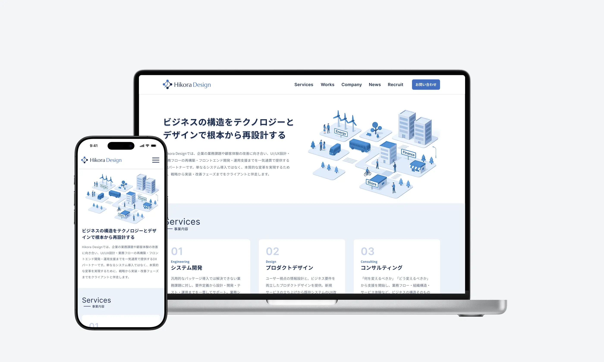
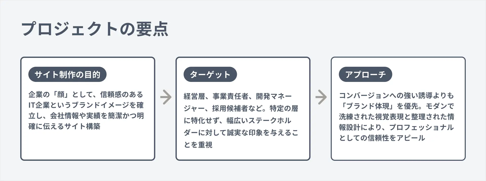
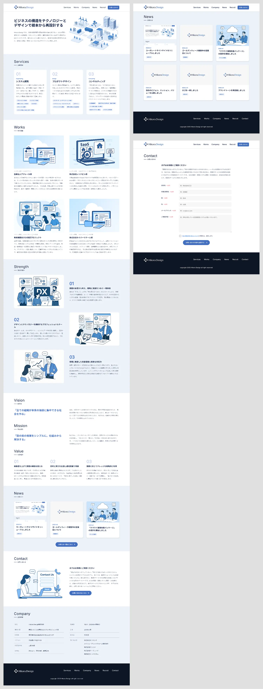
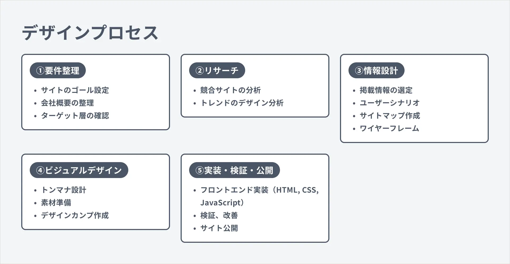
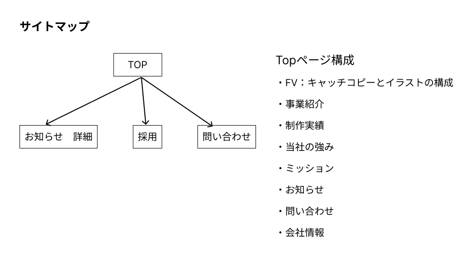
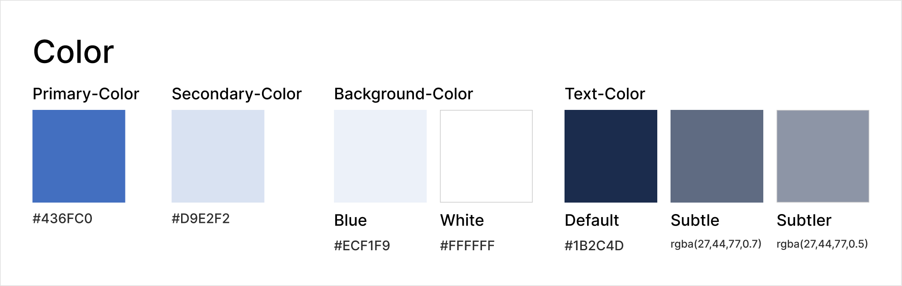
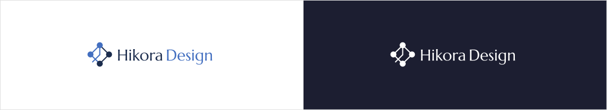

Hikora Design コーポレートサイト
- Webサイト
- 自主制作

本サイトは、Webデザインにおけるスキル（情報設計・ビジュアルデザイン・ブランド構築力など）を包括的に証明することを目的として制作した架空の企業サイトです。 業界問わず通用する、洗練された印象と信頼感を併せ持つコーポレートサイトを意識し、ユーザー体験とビジュアルの両面から設計しています。
- カテゴリー：コーポレートサイト
- 制作種別：自主制作
- 担当領域：企画、デザイン、コーディング
- 使用ツール等：Figma, HTML, CSS(Sass), JavaScript, git, Github
- 制作期間：3週間
プロジェクト概要
本プロジェクトは、信頼感のあるIT企業としてのブランドイメージを確立するため、企業の「顔」となるコーポレートサイトとして制作しました。 訪問者に対して事業内容や制作実績を簡潔かつ明確に伝えることで、確かな技術力と信頼性を印象付けることを主眼に置いています。
ターゲットは、開発リソースを求める経営層や事業責任者、および採用候補者などを幅広く想定。 特定の層への強い訴求よりも、まずは企業としての誠実な姿勢を正しく伝えることに注力しました。 アプローチとしては、モダンで洗練されたデザインと整理された情報設計を軸に、過度な装飾を排したスマートな表現を採用。 IT企業としてのプロフェッショナルな側面を体現し、ブランド価値を底上げする構成を追求しました。

最終成果物

Hikora Designのサイトはこちら
Hikora Designは、ビジネスの構造をテクノロジーとデザインで根本から再設計するDX事業の会社です。
デザインプロセス
デザインプロセスは以下の手順で進めました。以下の章で詳細なプロセスを紹介します。

1. 要件整理
本プロジェクトは、信頼感のあるIT企業としてのブランドイメージを確立するため、企業の「顔」となるコーポレートサイトとして制作しました。 実務における要件を想定し、以下の設定を構築して制作を開始しました。
クライアント情報
Hikora Designは、UI/UX設計から業務フローの最適化、フロントエンド開発、そして運用支援までを一気通貫で手がけるDX（デジタルトランスフォーメーション）パートナーです。 戦略立案から導入・改善フェーズにいたるまでクライアントに深く伴走し、ビジネスの本質的な変革を実現することを強みとしています。
サイト制作の目的
本サイトの制作目的は、企業の「顔」として、信頼感のあるIT企業というブランドイメージを確立し、会社情報や実績を簡潔かつ明確に伝えるサイト構築です。
ターゲット層
経営層、事業責任者、開発マネージャー、採用候補者など。特定の層に特化せず、幅広いステークホルダーに対して誠実な印象を与えることを重視しています。
2. リサーチ
次に、競合他社が展開するコーポレートサイトの構成や機能性を多角的に分析し、IT業界における標準的な情報設計と他社との差別化ポイントを明確化しました。 あわせて、近年のモダンなWebデザイントレンドを精査し、信頼感と先進性を両立させる視覚的な最適解を模索しています。 これらの分析結果に基づき、本プロジェクトの指針となる参考サイトを収集・整理することで、目指すべきブランドイメージの具体化を図りました。
3. 情報設計
リサーチによって明確になった競合との差別化要因やターゲットのニーズに基づき、ITパートナーとしての信頼性を担保するために必要なコンテンツを厳選しました。 訪問者が企業の専門性と事業内容をすばやく理解できるよう情報の優先順位を整理し、導入から実績紹介まで淀みない動線を描く論理的な情報構成を設計しています。 この設計指針を具体化するためにサイトマップとワイヤーフレームを作成し、情報の配置や画面遷移の最適化を図りました。
設計の中心に置いたのは、初めてサイトを訪れたユーザーが「この会社は何をしているのか」「どのような価値を提供しているのはか」を瞬時に把握できる構成です。 トップページには企業概要、事業内容、実績、理念といった要点を凝縮し、視認性と情報量のバランスを細部まで調整しながら、限られたスペースの中に必要十分な要素を配置しました。
導線の設計においては、閲覧者の関心が自然に移り変わるストーリー性を重視しています。まず事業内容を提示し、その裏付けとして制作実績を紹介。 次に、他社との違いや独自の価値を伝える「強み」のセクションを経て、企業理念へとつなげました。 その後、直近の活動を示すお知らせを配置し、最終的にお問い合わせへと誘導する構成にすることで、ユーザーが迷うことなく理解を深め、次のアクションへ進めるよう配慮しています。 単なる情報の羅列ではなく、訪問者の理解と行動を支える論理的な流れを重視した情報設計を追求しました。

4. ビジュアルデザイン
信頼感とモダンなIT企業のプロフェッショナルな姿勢を表現するため、視覚表現の細部にわたり一貫したデザインを施しました。
配色は、誠実さと先進性を象徴する青系統のトーンで統一し、情報の重要度に合わせて色の濃淡を使い分けることで、ユーザーの認知負荷を軽減する直感的なカラー設計を行っています。同時に、すべての配色においてWCAG基準に準拠したコントラスト比を維持し、視認性とアクセシビリティへの配慮を徹底しました。
書体には、癖がなくモダンな印象を与えるInterと、可読性に優れたゴシック体を採用し、情報の正確な伝達を最優先しています。 レイアウト設計においては、テキスト主体となるコンテンツでも閲覧の妨げにならないよう、情報の密度を適切にコントロールしました。 単なる視覚的な整理に留まらず、情報の受け取りやすさや読み進める際の心地よさまでを追求し、総合的なユーザー体験の向上を目指したビジュアルデザインを構築しています。

以下がロゴ。

最終的に出来上がったデザインカンプは以下。
5. 実装・公開・検証改善
実機での検証を重ね、PCからスマートフォンまであらゆるデバイスで一貫したパフォーマンスを発揮できるよう実装を行いました。 単にレイアウトを画面内に収めるだけでなく、デバイスごとの画面幅に応じて余白、コンテンツ幅、フォントサイズを緻密に調整することで、どのような閲覧環境でもストレスのない快適なユーザー体験を担保しています。
アニメーション設計においては、過度な視覚効果が情報の理解を妨げている競合事例を分析し、必要最低限の表現に厳選しました。 装飾としての動きではなく、ユーザーの視線誘導や認知を補助することを目的とし、フェードインを中心とした自然な挙動を採用。 これにより、ページの表示速度や情報の可視性を維持したまま、信頼感のある落ち着いた操作感を実現しています。 また、ボタンやリンクには微細なホバーアクションを加え、クリック可能性を直感的に伝える視覚的なフィードバックを実装することで、UIのアクセシビリティと操作性を高めました。
公開に際しては、表示負荷の最適化や多角的なブラウザテストを実施。検証過程で見つかった微細なズレや読み込み速度の課題を改善し続けることで、見た目の演出に偏ることのない、ユーザー目線での実用性と機能性を追求した品質に仕上げています。
Hikora Designのサイトはこちら
Hikora Designは、ビジネスの構造をテクノロジーとデザインで根本から再設計するDX事業の会社です。